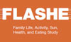
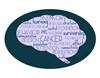

July 2016 Newsletter
Foreword from William Klein, Associate Director of Behavioral Research Program (BRP)

Greetings from the Behavioral Research Program (BRP). We hope you enjoy this July 2016 issue of BRP Scientific News. Our program is pleased to share several new BRP-initiated and BRP-supported Funding Opportunity Announcements (FOAs) with the behavioral research community. I can’t remember the last time we had so many opportunities released at once. Please do take a moment to review them; I hope you’ll consider submitting an application and/or contacting the relevant Program Director for more information.
This issue of BRP Scientific News provides funding opportunity news and scientific highlights from extramural researchers, as well as staffing and career announcements from the program. Members of our research community who wish to continue receiving this semi-annual e-newsletter may include ncidccpsbrpadvances@mail.nih.gov in their address books to ensure proper delivery. Recipients may subscribe or unsubscribe anytime via: https://cancercontrol.cancer.gov/brp/e-newsletter/subscribe.html.
You can also follow us on our new Twitter account at @NCIBehaviors,  where we’ll share scientific updates, training and career opportunities, information about events, and new funding opportunities.
where we’ll share scientific updates, training and career opportunities, information about events, and new funding opportunities.
As always, we welcome your feedback. Please feel free to contact any member of the BRP team. We designed our online staff directory to help you find the appropriate contact for a research project, view our network of mentorship and collaboration, and learn more about behavioral research supported by the National Cancer Institute (NCI).
Sincerely,
Bill Klein
Funding Opportunities
We are pleased to announce several new BRP-initiated and BRP-supported funding opportunities in areas such as cognition, integrated data analysis, and cancer communication in new media. Please visit the Behavioral Research Grants page or the Division of Cancer Control and Population Sciences (DCCPS) Funding Opportunities page for a complete listing.
| Funding Opportunity Announcements | Program Contact |
|---|---|
Stimulating Innovations in Behavioral Intervention Research for Cancer Prevention and Control |
Tanya Agurs-Collins |
Innovative Approaches to Studying Cancer Communication in the New Media Environment |
Kelly Blake |
Predicting Behavioral Responses to Population-Level Cancer Control Strategies |
Rebecca Ferrer |
Advancing Basic Behavioral and Social Science Research on Resilience: An Integrative Science Approach |
Rebecca Ferrer |
Neural Regulation of Cancer PAR-16-245 (R01) and PAR-16-246 (R21) |
Paige Green |
Science of Behavior Change: Use-inspired Basic Research to Optimize Behavior Change Interventions and Outcomes (Admin Supp) |
Paige Green |
Improving Smoking Cessation in Socioeconomically Disadvantaged Populations via Scalable Interventions |
Yvonne Hunt |
Cancer-related Behavioral Research through Integrating Existing Data |
 Richard Moser |
Basic Biopsychosocial Mechanisms and Processes in the Management of Chronic Conditions |
 Wendy Nelson |
Leveraging Cognitive Neuroscience Research to Improve Assessment of Cancer Treatment Related Cognitive Impairment |
Jerry Suls |
New Grant Application Form
As of May 25, 2016, NIH has changed its grant application forms to Version D from Version C. Instructions for both forms can be found online. In addition, NIH has updated and simplified the About Grants section and the How-to Apply Guide. View an instructional YouTube video  to learn how to use the new application. NIH is collecting user feedback on the changes until March 30, 2017.
to learn how to use the new application. NIH is collecting user feedback on the changes until March 30, 2017.
Staffing Announcements
The program welcomes Kimberly Woodhouse and Alesa Teague.
Kimberly Woodhouse joined the Health Behaviors Research Branch as a program specialist this spring. Kimberly works as part of the administrative team to process travel, set up conferences, and assist in administering the Westat contract. Prior to joining the National Cancer Institute, Kimberly was a Medical Technologist in the DNA Sequencing and Genomics core of the National Heart, Lung, and Blood Institute. In this position, she was Acting Lab Manager and also performed wet lab work: RNA/DNA extraction from various sources, DNA library construction, quality control, and incoming sample tracking. Kimberly earned a bachelor’s degree in medical technology from Norfolk State University  in Norfolk, Virginia.
in Norfolk, Virginia.

Alesa Teague joined the Tobacco Control Research Branch as a program specialist this past winter. She works on the administrative team. Alesa began working for the National Institutes of Health (NIH) in 1988 and held positions at the National Eye Institute and the National Institute of Mental Health before joining the National Cancer Institute’s Division of Cancer Treatment and Diagnosis in 2007. Alesa studied accounting and psychology at Montgomery College. 
Changes within the Program
As of October 1, BRP will contain four branches: the Basic Biobehavioral and Psychological Sciences Branch, the Health Behaviors Research Branch, the Health Communication and Informatics Research Branch, and the Tobacco Control Research Branch. We are dissolving the Science of Research and Technology Branch and moving staff to other parts of the program.
BRP Career Opportunities
All positions listed are based in Rockville, Maryland, at NCI’s Shady Grove Campus. Please visit the Career and Training page to learn more.
Program Director with the Basic Biobehavioral and Psychological Science Branch (BBPSB): Candidates must have a doctorate or medical degree and specialized research, knowledge, and expertise in clinical oncology, cancer survivorship, or behavioral science. The position provides researchers the opportunity to develop research and funding initiatives, cultivate a diverse portfolio of grant-supported research, lead and participate in transdisciplinary research collaborations, and develop national and international scientific programming. Interested candidates are encouraged to submit a letter of interest, CV, and two representative publications immediately to Paige Green, Ph.D., M.P.H., BBPSB Chief at: ncidccpsbrpadvances@mail.nih.gov.
Program Director with the Health Behaviors Research Branch (HBRB): Candidates must have a doctorate or medical degree and with specialized research, knowledge, and expertise in cancer-related health behaviors and behavior change. Scholarly achievement as evidenced by an established peer-reviewed publication and presentation record is required. Scientists within the branch support investigations at domestic and international research institutions and provide expert oversight of extramural grant, cooperative agreement, and contract portfolios. Interested candidates are encouraged to submit a letter of interest, CV, and two representative publications immediately to Susan Czajkowski, Ph.D., HBRB Chief at: ncidccpsbrpadvances@mail.nih.gov.
Program Analyst with the BRP Office of the Associate Director (OAD): Candidates must have a master’s degree or equivalent in public health, public administration, health communication, business management, or a related field. The analyst will work on projects in all four branches of the program. Duties include contract management, budgeting, writing and editing, and disseminating new funding initiatives. Interested candidates are encouraged to submit a letter of interest, resume/CV, writing sample and letter of recommendation from a professional reference immediately to ncidccpsbrpadvances@mail.nih.gov.
Health Communication Fellowship with the BRP Office of the Associate Director (OAD): Qualified candidates should have a master’s degree or equivalent work experience in communication, journalism, public health, business administration, or related field. The fellow will work on communication projects in several priority areas including cancer-related health behaviors, biopsychosocial processes of cancer-related behaviors, and decision science and policy in cancer control. Duties include writing and editing research briefs, e-newsletters, and factsheets; designing infographics and fliers; leading webinars; managing web and social media content; and informing and implementing a digital communication strategy. Interested candidates are encouraged to submit a letter of interest and CV/resume to ncidccpsbrpadvances@mail.nih.gov. [Materials due July 15.]
NCI Accepting Applications for Cancer Prevention Fellowship [Due August 25]
The Cancer Prevention Fellowship is a postdoctoral training program for scientists, researchers, and clinicians in the cancer prevention and control field. Fellows have the opportunity to collaborate with NCI investigators throughout the fellowship as well as obtain an M.P.H. degree at an accredited university during the first year. Fellowship are available in epidemiology, laboratory sciences, social and behavioral sciences, biostatistics, health services, nutrition, and engineering. The typical fellowship duration is 4 years. For more details, visit: https://cpfp.cancer.gov/
Resources, Research Tools, and Events
New HINTS Data Available for Download
The latest Health Information National Trends Survey (HINTS) merges traditional HINTS questions about health communication, cancer knowledge, and cancer risk behaviors with questions about tobacco, diet supplement labeling, medical devices, and product recalls. Visit the HINTS website to view U.S. adult population estimates for each HINTS-FDA item, as well as all previous items from other HINTS data sets.
HINTS-FDA was developed in partnership with the Food and Drug Administration’s (FDA) Center for Tobacco Products, Center for Food Safety and Applied Nutrition, and Office of the Commissioner. This data set, along with all previous HINTS public use data sets, is available for free download at https://hints.cancer.gov (available in SAS, SPSS, or STATA formats).
Family Life, Activity, Sun, Health, and Eating (FLASHE) Study Data Available for Download
The adolescent and parent diet and demographic data sets from the FLASHE Study are now available for free download on BRP’s website. Additional diet outcome variables, the physical activity data set, and additional FLASHE variables will be released later this year or next year.
FLASHE study researchers collected survey data on psychosocial, generational (parent-adolescent), and environmental correlates of cancer-preventive behaviors. The study’s purpose is to help researchers understand lifestyle behaviors that relate to cancer risk. The majority of the survey questions focus on diet and physical activity, with additional survey items about sleep, sun safety and tobacco use. NCI and the National Collaborative on Childhood Obesity Research  sponsored the study.
sponsored the study.
Learn more and download the data at: https://cancercontrol.cancer.gov/brp/hbrb/flashe.html
Classification of Laws Associated with School Students (CLASS) Update
CLASS was updated in 2016 to include scores for new school nutrition and physical education policy areas. CLASS uses two policy classification systems to score state-level codified laws for physical education and nutrition in schools. The scoring criteria for these systems are based on current public health research and national recommendations and standards. CLASS data, maps, and profiles allow users to compare physical education/activity and nutrition laws from all 50 states and D.C. with national standards and medians. This comparison enables users to assess differences across states, changes over time, and linkages with other data sources. The data are available at: https://class.cancer.gov/
New Edited Volume on Oncology Informatics Produced by BRP Staff
Bradford Hesse, Ph.D., Chief of the Health Communication and Informatics Research Branch worked with a host of internal and external scientists to publish an edited volume titled: “Oncology Informatics: Using Health Information Technology to Improve Processes and Outcomes in Cancer  .” The volume is distinct from other informatics-oriented texts in that it doesn’t focus primarily on technology but on how evidence-based strategies utilizing new informatics technologies can support better decision-making, communication, clinical processes, behavioral processes, and patient self-management. Its purpose is to give multidisciplinary audiences an overview on how changes in the broad information environment can be used to accelerate progress against cancer through better prevention, disease control, and healthy survivorship. The book was edited by Bradford W. Hesse, David K. Ahern, and Ellen Beckjord
.” The volume is distinct from other informatics-oriented texts in that it doesn’t focus primarily on technology but on how evidence-based strategies utilizing new informatics technologies can support better decision-making, communication, clinical processes, behavioral processes, and patient self-management. Its purpose is to give multidisciplinary audiences an overview on how changes in the broad information environment can be used to accelerate progress against cancer through better prevention, disease control, and healthy survivorship. The book was edited by Bradford W. Hesse, David K. Ahern, and Ellen Beckjord  and published by Elsevier (Academic Press) Publishers
and published by Elsevier (Academic Press) Publishers  .
.
Neuroscience and Cancer Control Think Tank Series
The Basic Biobehavioral and Psychological Sciences branch recently launched a new initiative that will consider the place of neuroscience in cancer control. The three-part think tank is titled “Towards Health Neuroscience: Assessing the Potential for Neuroscience to Inform Cancer Control.” The first meeting was held June 22 in Vancouver, Canada. Future meetings are open to neuroscientists and cancer control scientists who are interested in exploring how neuroscience could address cancer progression and the late and long-term effects of cancer treatment. Please email Paige Green at paige.green@nih.gov for more information.
Capstone for NCI Network on Biobehavioral Pathways in Cancer
Funding for the Network on Biobehavioral Pathways in Cancer is coming to a close. The five-year initiative supported small-scale pilot projects to advance knowledge of molecular pathways that link psychological, behavioral, or social factors to cancer biology and cancer outcomes. NCI is hosting a final capstone event for researchers to present their findings in September. Day two, (September 16, 2016), of the capstone is open to the research community. To learn more or RSVP, please visit: http://www.cvent.com/events/nci-network-on-biobehavioral-pathways-in-cancer-capstone-meeting/archived-257064cf005f4103904f8604f066e7fb.aspx 
Smokefree.gov and American Cancer Society to Develop mHealth Resource for Cancer Survivors
Our smokefree.gov team is working with the American Cancer Society  to develop “Springboard Beyond Cancer,” a mobile, web-based self-management tool that will help survivors manage their health and well-being. mHealth resources such as this one have the potential to reach large numbers of survivors and their caregivers while enhancing the accessibility of important information on symptom management, health lifestyle behaviors, and emotional well-being. The team gathered feedback from survivors and also carried out usability testing during the development process. The tool will be available starting in early August.
to develop “Springboard Beyond Cancer,” a mobile, web-based self-management tool that will help survivors manage their health and well-being. mHealth resources such as this one have the potential to reach large numbers of survivors and their caregivers while enhancing the accessibility of important information on symptom management, health lifestyle behaviors, and emotional well-being. The team gathered feedback from survivors and also carried out usability testing during the development process. The tool will be available starting in early August.
BRP Hosts Innovative Workshop on Optimizing Population-level Cancer Control Strategies

This past May, members of the Basic Biobehavioral and Psychological Sciences Branch (BBPSB) hosted a three-day workshop that sought to develop innovative ways to optimize population-level cancer control strategies. The “Sandpit” brought together 20 early- to mid-career researchers with expertise in public health, physical activity, economics, policy, survivorship, and the built environment. The goals of the workshop were to 1) facilitate the development of novel research questions and hypotheses about how individual and contextual responses could better inform population-level cancer control strategies and 2) provide resources and infrastructure to support the emerging teams. With the help of mentors and a facilitation team, the event challenged researchers to think critically about how to better address cancer prevention and control at the population level.
Working Group Aims to Identify Behavior-related Predictors of Weight Loss
A trans-NIH working group composed of researchers from agencies across NIH is identifying behavioral, psychosocial, physiological, and environmental predictors of weight loss and weight regain in adults. The group will present its findings at a symposium titled “Progress toward developing core measures: Using crowd sourcing efforts within the scientific community.” The talk will take place from 8-9:30 a.m. during Obesity Week  from 8-9:30 a.m. on November 4, 2016, in New Orleans, Louisiana. For more information, email Susan Czajkowski at susan.czajkowski@nih.gov.
from 8-9:30 a.m. on November 4, 2016, in New Orleans, Louisiana. For more information, email Susan Czajkowski at susan.czajkowski@nih.gov.
Working Group Aims to Identify Genetic Variants Associated with Intentional Weight Loss
A trans-NIH working group has convened to identify genetic variants that can predict intentional weight loss in adults. Researchers who responded to the RFI Randomized Controlled Trials (RCTs) of Lifestyle Weight Loss Interventions for Genome-Wide Association Studies will meet to discuss 1) the feasibility of running a collaborative genome-wide study, 2) the opportunity to pool existing resources and brainstorm approaches and challenges, and 3) the possibility of harmonizing selected behavioral phenotypes (e.g. diet, physical activity). A workshop titled “Trans-NIH Consortium: (RCTs) of Lifestyle Weight Loss Interventions for Genome-Wide Association Studies” will take place August 30-31, 2016, at NCI’s Shady Grove office in Rockville, Maryland. For more information, email Tanya Agurs-Collins at tanya.agurs-collins@nih.gov.
Workshop on Developing More Effective Behavioral Interventions to be Held this Fall
A workshop titled “Accelerating the Pathway from Ideas to Efficacy: Developing More Effective Interventions for Lifestyle Behaviors related to Chronic Diseases” will take place September 28 - 29, 2016, in Rockledge 2 (Room 9112/9116), in Bethesda, Maryland. Workshop sponsors include the National Heart, Lung, and Blood Institute, Office of Disease Prevention, and Office of Behavioral and Social Sciences Research. Leonard Epstein  , Ph.D., a leading behavioral researcher from University at Buffalo
, Ph.D., a leading behavioral researcher from University at Buffalo  , is chairing the event. The first day of the workshop is open to the scientific community and will be webcast. Attendance the second day will be limited to invited speakers, participants, and NIH staff. BRP will email a registration link to this listserv later this summer.
, is chairing the event. The first day of the workshop is open to the scientific community and will be webcast. Attendance the second day will be limited to invited speakers, participants, and NIH staff. BRP will email a registration link to this listserv later this summer.
Geospatial Approaches to Cancer Control and Population Sciences
A conference on geospatial approaches to cancer control and population sciences is scheduled for September 12-14, 2016, at the Natcher Conference Center on the main NIH Campus in Bethesda, Maryland. The purpose of the conference is to teach cancer control researchers how to use geospatial tools, models, and approaches in their work. The event is free, but registration is required and is open until August 31, 2016. Please register here: http://www.scgcorp.com/geospatial2016/Default. 
Upcoming Conference on the Science of Dissemination and Implementation in Health
The 9th Annual Conference on the Science of Dissemination and Implementation in Health  will be held December 14-15, 2016, at the Marriott Wardman Park in Washington, D.C. The goal of the event is to expand the research base by bridging the gap between evidence, practice, and policy in health and medicine. Tracks include behavioral health, big data and technology, clinical care settings, and precision medicine, among others. Abstracts are due by 5 p.m. August 4, 2016.
will be held December 14-15, 2016, at the Marriott Wardman Park in Washington, D.C. The goal of the event is to expand the research base by bridging the gap between evidence, practice, and policy in health and medicine. Tracks include behavioral health, big data and technology, clinical care settings, and precision medicine, among others. Abstracts are due by 5 p.m. August 4, 2016.
Tobacco Control Meetings Held in May
The Tobacco Control Research Branch hosted two tobacco control research meetings this past May. The Emerging Science in State and Community Tobacco Control Policy and Practice Event was held May 4 at the National Press Club  in Washington, D.C. About 300 people were in attendance to hear highlights from State and Community Tobacco Control (SCTC) Research Initiative
in Washington, D.C. About 300 people were in attendance to hear highlights from State and Community Tobacco Control (SCTC) Research Initiative  investigators. A moderated panel discussion also focused on the lessons learned and discussed the persistent and critical need for tobacco control at the local and community levels. On May 5-6, the State and Community Tobacco Control (SCTC) Research Initiative Steering Committee met at the main NIH campus in Bethesda, Maryland. Researchers had the opportunity to share research findings, discuss the impact of those findings, and highlight emerging priorities.
investigators. A moderated panel discussion also focused on the lessons learned and discussed the persistent and critical need for tobacco control at the local and community levels. On May 5-6, the State and Community Tobacco Control (SCTC) Research Initiative Steering Committee met at the main NIH campus in Bethesda, Maryland. Researchers had the opportunity to share research findings, discuss the impact of those findings, and highlight emerging priorities.
Scientific Advances
DCCPS Publication on the Role of Science in Policy Released
The Division of Cancer Control and Population Sciences (DCCPS) published “Informing Policy and Programs: 2016 Update” this April. This online-only resource provides examples of the division’s policy-related contributions to the field of cancer control and prevention. DCCPS researchers hope this publication illustrates the importance of developing a useful and comprehensive scientific evidence base for policymakers and public health practitioners. The publication includes examples of studies, collaborations, and tools in areas such as tobacco control, breast cancer and the environment, international policy, and practical data and evidence. To read the report, go to: https://cancerresearchideas.cancer.gov/a/index
Reference: National Cancer Institute Informing Policy and Programs: 2016 Update, Division of Cancer Control and Population Sciences. (2016).
Food and Drug Administration (FDA) Updates Nutrition Facts Label
The FDA recently announced changes to its food label. The goal of update is to help people make more informed eating decisions, according to a May news release from the agency. The label features larger type for calorie counts, updated serving sizes, and a new section that lists added sugars. To learn more, go to: https://wayback.archive-it.org/8315/20170119070308/https://www.hhs.gov/blog/archive/2016
Genomic Data Commons to Centralize, Standardize Genomic Data
NCI launched the Genomic Data Commons (GDC) on June 6. The system is housed at the University of Chicago and is a core component of the National Cancer Moonshot and the President’s Precision Medicine Initiative. The GDC centralizes and standardizes data from large-scale programs such as The Cancer Genome Atlas and Therapeutically Applicable Research to Generate Effective Treatments , which are two of the largest and most comprehensive cancer genomic data sets in the world. Researchers are encouraged to submit cancer genomic and clinical data to GDC. “With each new addition, the GDC will evolve into a smarter, more comprehensive knowledge system that will foster important discoveries in cancer research and increase the success of cancer treatment for patients,” says Louis M. Staudt, M.D., Ph.D., an NIH Distinguished Investigator. To learn more, go to: https://www.nih.gov/news-events/news-releases/newly-launched-genomic-data-commons-facilitate-data-clinical-information-sharing
Cognitive Behavioral Therapy Delivered by Videoconference Helps Breast Cancer Survivors
Reuters  recently covered a BRP-funded study on the effectiveness of cognitive behavioral therapy for breast cancer survivors with chemotherapy-related cognitive dysfunction (CRCD). Overall, the researchers found the therapy, which was delivered by videoconference, significantly decreased the subjective level of cognitive complaints and improved the information processing speed of the women. A total of 47 women participated. The study is important because there is no established treatment for the survivorship problem of CRCD.
recently covered a BRP-funded study on the effectiveness of cognitive behavioral therapy for breast cancer survivors with chemotherapy-related cognitive dysfunction (CRCD). Overall, the researchers found the therapy, which was delivered by videoconference, significantly decreased the subjective level of cognitive complaints and improved the information processing speed of the women. A total of 47 women participated. The study is important because there is no established treatment for the survivorship problem of CRCD.
Reference: Ferguson, R.J., Sigmon, S.T., Pritchard, A.J., LaBrie, S.L., Goetze, R.E., Fink, C.M., & Garrett, A.M. (2016). A randomized trial of videoconference-delivered cognitive behavioral therapy for survivors of breast cancer with self-reported cognitive dysfunction.  Cancer, 122(11): 1782-91. doi:10.1002/cncr.29891
Cancer, 122(11): 1782-91. doi:10.1002/cncr.29891
Life-After-Cancer
The Washington Post  recently featured the post-cancer physical activity work of BRP grantees Jennifer Ligibel
recently featured the post-cancer physical activity work of BRP grantees Jennifer Ligibel  , a senior physician at Dana-Farber Cancer Institute
, a senior physician at Dana-Farber Cancer Institute  in Boston, and Kathryn H. Schmitz
in Boston, and Kathryn H. Schmitz  , professor of public health sciences and associate director of population sciences at Penn State College of Medicine
, professor of public health sciences and associate director of population sciences at Penn State College of Medicine  . The article, titled “You survived cancer: Now what?
. The article, titled “You survived cancer: Now what?  ,” also quoted BRP deputy associate director Linda Nebeling. The researchers discussed a change in thinking among clinicians and researchers: Life after cancer should be filled with exercise and healthy food, rather than just bedrest and therapy. With a third of cancers now considered preventable
,” also quoted BRP deputy associate director Linda Nebeling. The researchers discussed a change in thinking among clinicians and researchers: Life after cancer should be filled with exercise and healthy food, rather than just bedrest and therapy. With a third of cancers now considered preventable  , lifestyle decisions are crucial, especially for cancer survivors because healthy behavior can prevent recurrence. A healthy lifestyle also helps survivors recover faster and feel less fatigued, the researchers said.
, lifestyle decisions are crucial, especially for cancer survivors because healthy behavior can prevent recurrence. A healthy lifestyle also helps survivors recover faster and feel less fatigued, the researchers said.
Reference: Levingston, S.A. You survived cancer: Now what?  The Washington Post. March 28, 2016.
The Washington Post. March 28, 2016.
Urban Design Influences Physical Activity Levels
The Lancet  recently highlighted a DCCPS-funded study that looked at the effect of environmental attributes on physical activity. The article, “Physical activity in relation to urban environments in 14 cities worldwide: a cross-sectional study,”
recently highlighted a DCCPS-funded study that looked at the effect of environmental attributes on physical activity. The article, “Physical activity in relation to urban environments in 14 cities worldwide: a cross-sectional study,”  found neighborhood design had a significant influence on how often residents exercised. Using data from the International Physical Activity and Environment Network
found neighborhood design had a significant influence on how often residents exercised. Using data from the International Physical Activity and Environment Network  adult study, the researchers determined that areas with more people, intersections, parks, and transit areas were significantly, positively associated with more physical activity among residents.
adult study, the researchers determined that areas with more people, intersections, parks, and transit areas were significantly, positively associated with more physical activity among residents.
Reference: Sallis, J.F., Cerin, E., Conway, T.L., Adams, M.A., Frank, L.D., Pratt, M., Salvo, D., Schipperijn, J., Smith, G., Cain, K.L., Davey, R., Kerr, J., Lai, P.C., Mitáš, J., Reis, R., Sarmiento, O.L., Schofield, G., Troelsen, J., Van Dyck, D., De Bourdeaudhuij, I., Owen, N. (2016). Physical activity in relation to urban environments in 14 cities worldwide: a cross-sectional study. Lancet, 387, 2207-2217. doi: http://www.thelancet.com/journals/lancet/article/PIIS0140-6736(15)01284-2/fulltext 
Non-melanoma Skin Cancer Survivors as Likely to Sunburn as Those Without a History of Skin Cancer
Reuters Health  recently covered an article on non-melanoma skin cancer survivors. The manuscript was published this May in the Journal of the American Academy of Dermatology and compared the sun-protective behaviors of non-melanoma skin cancer survivors with their non-cancer affected peers. The researchers used self-reported data from the 2005 and 2010 National Health Interview Surveys and studied non-Hispanic whites because this group is most likely to develop non-melanoma skin cancer. The results were surprising, the researchers said. Survivors were more likely to protect themselves by seeking shade and wearing sunscreen, long-sleeve shirts, and hats. However, the survivors did not have significantly lower odds of having a recent sunburn. The researchers concluded that health care providers should emphasize the importance of avoiding sunburns, rather than just telling people to wear sunscreen.
recently covered an article on non-melanoma skin cancer survivors. The manuscript was published this May in the Journal of the American Academy of Dermatology and compared the sun-protective behaviors of non-melanoma skin cancer survivors with their non-cancer affected peers. The researchers used self-reported data from the 2005 and 2010 National Health Interview Surveys and studied non-Hispanic whites because this group is most likely to develop non-melanoma skin cancer. The results were surprising, the researchers said. Survivors were more likely to protect themselves by seeking shade and wearing sunscreen, long-sleeve shirts, and hats. However, the survivors did not have significantly lower odds of having a recent sunburn. The researchers concluded that health care providers should emphasize the importance of avoiding sunburns, rather than just telling people to wear sunscreen.
Reference: Fischer, A.H., Wang, T.S., Yenokyan, G., Kang, S., Chien, A.L. (2016). Sunburn and sun-protective behaviors among adults with and without previous nonmelanoma skin cancer (NMSC): A population-based study. Journal of the American Academy of Dermatology. doi: 10.1016/j.jaad.2016.02.1236